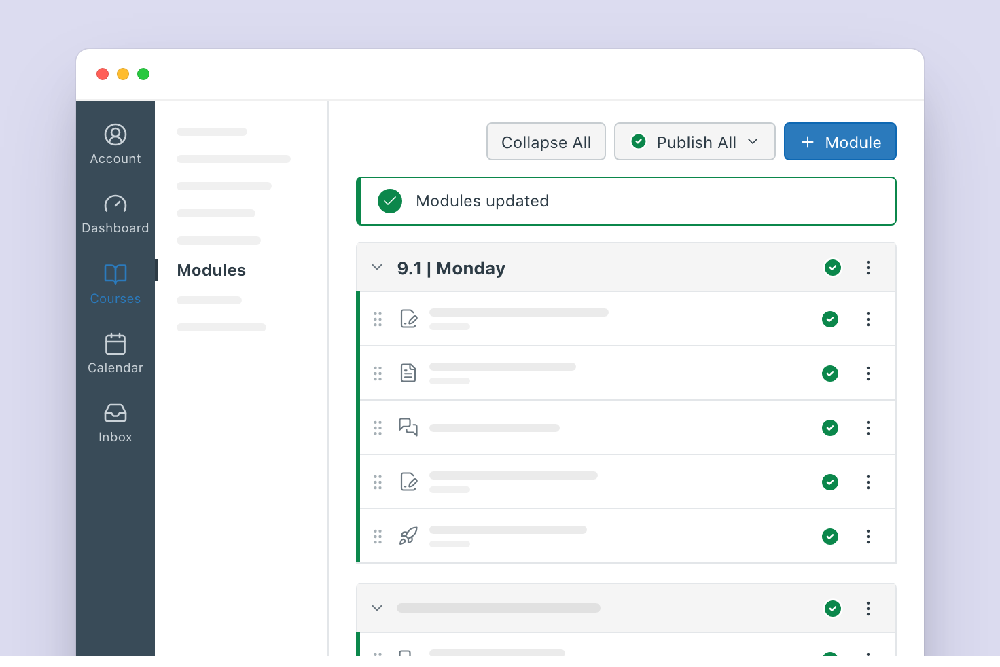

Bulk Publish
In a hackathon week, an engineer and I took publishing a 120-item course from 120 clicks down to 2.
- Product
- Canvas LMS
- Role
- Senior Product Designer
- Team
- 1 engineer
- Timeline
- Hackathon week
- Year
- 2024

Summary
- Problem
- Instructors had to publish course items one at a time, and a typical semester course has 80 to 120 of them.
- Solution
- A menu that publishes or unpublishes a whole course or module at once, with progress and error states.
- Result
- 120 clicks down to 2. It shipped soon after the hackathon.
The problem
Every module and every item had its own little publish button, and clicking each one was the only way to do it.
Teachers have nearly developed carpal tunnel syndrome from clicking it over and over. Imagine clicking a small 32 x 32 icon 50 times! I picked it for the hackathon because it was a small change that would make a big difference.
It is quite a long list of assignments that I do not all want to be published when I publish the course.

I timed about four colleagues clicking it. Each click took 0.75 to 1 second, so a 120-item course takes 90 to 120 seconds, and that's before any scrolling.

A menu, not multi-select
The usual pattern is a checkbox on every item plus an action menu. I dropped it. Instructors would still have to click every item, and the publish action would end up somewhere they didn't expect. The engineer also pointed out that changing the list items would be a much bigger job.

Instead, we went with a simple dropdown with three actions. Each one works on the whole course or on a single module.
- Publish all modules and items publishes everything.
- Publish all modules publishes only the modules, so students can preview the course outline without seeing the assignments yet.
- Unpublish all unpublishes everything.


Designing for a background job
Publishing a big course runs in the background and isn't instant, so we needed a progress dialog and an alert when it's done.


A course can have several editors at once, which opens up a bunch of edge cases. I mapped out what happens in each one.
- Someone closes the browser tab while the job is running.
- Another editor opens the Modules page during the job, or already had it open.
- One editor cancels the job while another is watching its progress.
- Two editors start the job at the same time.
- An item's content can't be changed.

Outcome
- Clicks, 98% fewer
- 120 to 2
- Seconds, 95% less time
- 120 to 5
These numbers are for publishing every item in a 120-item course. The 120-second baseline is estimated from click time, and the 5 seconds covers the two clicks. The job then finishes in the background.
It doesn't help with a hand-picked set of items. Those still get published one at a time.
Product leadership released it quickly because it was high impact for very little effort. It wasn't a revenue feature, but it showed instructors we were listening.
I didn't measure usage. If I had, I'd compare bulk actions against single-item publishing.
Great improvement! Love it. Sometimes you want to bring in content from somewhere else, but might not want the whole module published.